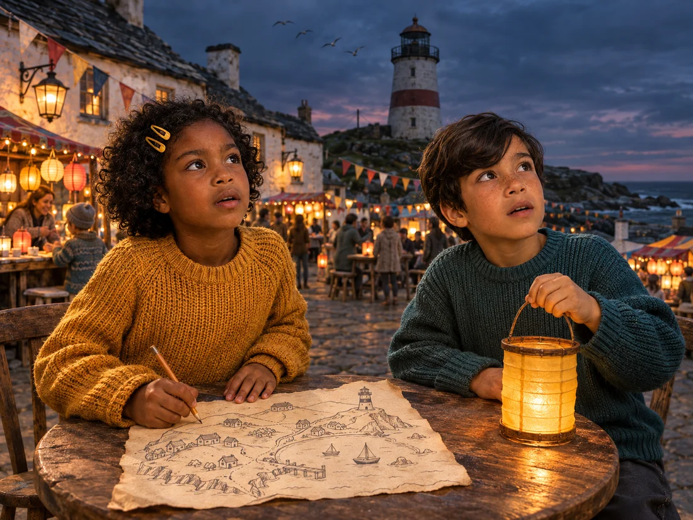
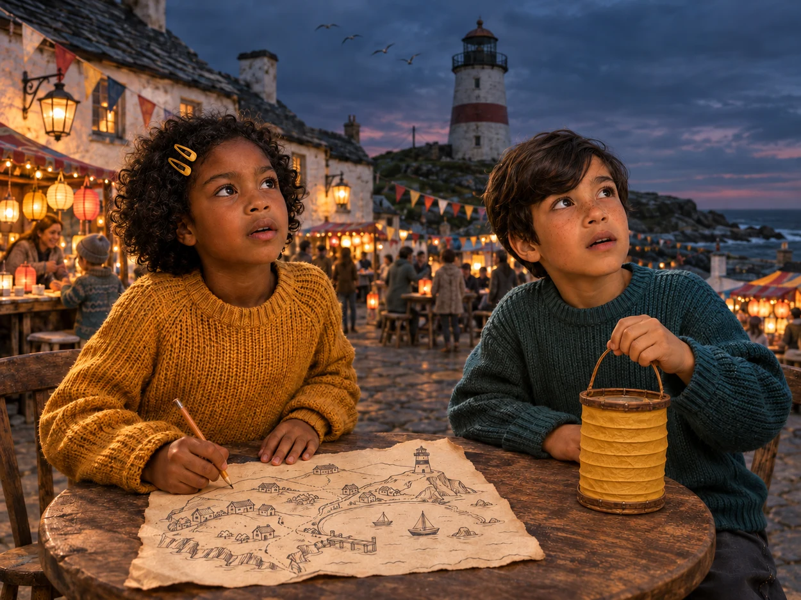

Primeira geração · lanterna acesa cedo
LIVRO-DEMONSTRAÇÃO
Na noite da Festa das Lanternas, o farol da ilha se apaga. Nina e Theo precisam encontrar um jeito de guiar os pássaros até em casa.
DA IDEIA À PÁGINA

Nina, 8 anos. Cachos curtos, presilhas amarelas e suéter mostarda. Ela desenha o mapa que revela o caminho alternativo.
Theo, 7 anos. Franja escura lateral, sardas e suéter verde-petróleo. Ele reconhece as aves e ergue a lanterna para guiá-las.
As referências das duas personagens foram usadas em cada geração. O roteiro definiu o que muda a cada página — o lugar, a roupa, a ação e a reação.
A lanterna apareceu acesa na primeira geração. Como Theo só a usa para guiar os pássaros na torre, a cena da praça foi revisada.


As personagens são fictícias. A demonstração usa imagens geradas e revisão editorial. A personalização com fotos e a automação do motor fazem parte do escopo de produção.